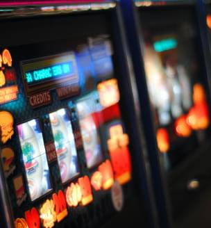
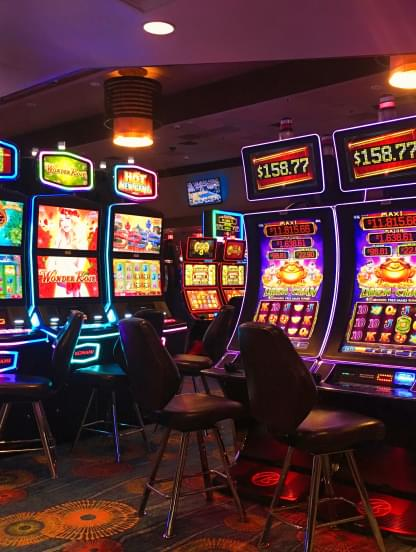

Wszystko o grach online w Polsce, o tym, jak zmieniła się branża automatów w Polsce i jakie zmiany przeszła przez ostatnie dekady.
Historia rozwoju automatów do gier
Branża automatów do gier w Polsce przeszła w ciągu ostatnich kilkudziesięciu lat znaczące zmiany. Pierwsze automaty pojawiły się w kraju w latach 60. XX wieku i były używane głównie w kasynach. W 1992 r. polski rząd ustanowił państwowy monopol na gry hazardowe, co doprowadziło do zamknięcia wszystkich kasyn i ustanowienia narodowej loterii. Jednak w 2009 roku prawo zostało zmienione, co pozwoliło na powrót kasyna i rozwój branży automatów do gier. Obecnie w Polsce jest około 40 000 automatów do gier, a branża ma roczny dochód w wysokości około 4 miliardów złotych (około 1 miliarda dolarów amerykańskich). Większość automatów znajduje się w automatach, które często znajdują się w centrach handlowych i innych miejscach publicznych. Istnieją również kasyna online i strony z grami, które oferują automaty do gry.

Ustawodawstwo hazardowe w Polsce
Polski rząd ściśle reguluje branżę automatów do gry, aby zapewnić jej uczciwość i przejrzystość. Wszystkie automaty muszą być certyfikowane przez agencję rządową, a operatorzy muszą przestrzegać surowych zasad dotyczących stawek wypłat i maksymalnych zakładów. Rząd nakłada również wysoką stawkę podatku od dochodów z gier hazardowych, która obecnie wynosi 50%.
Pomimo przepisów pojawiły się obawy dotyczące negatywnego wpływu automatów do gier na społeczeństwo. Krytycy twierdzą, że automaty do gier mogą uzależniać i prowadzić do problemów z hazardem, zwłaszcza wśród wrażliwych populacji, takich jak osoby o niskich dochodach i młodzież. W odpowiedzi rząd podjął działania mające na celu zmniejszenie liczby samochodów i ograniczenie ich dostępności. Na przykład w 2017 roku uchwalono ustawę zakazującą automatów do gier w miejscach publicznych, takich jak stacje benzynowe i sklepy.
Ogólnie rzecz biorąc, branża automatów do gier w Polsce wnosi znaczący wkład w gospodarkę kraju, ale pozostaje tematem kontrowersyjnym ze względu na potencjalny negatywny wpływ na społeczeństwo. Rząd nadal monitoruje i reguluje branżę, aby znaleźć równowagę między promowaniem wzrostu gospodarczego a ochroną dobra publicznego.

Regulacja automatów w Polsce
Regulacja automatów w Polsce jest nadzorowana przez Ministerstwo Finansów, które odpowiada za wydawanie licencji, monitorowanie operatorów i egzekwowanie prawa. Obecne ramy regulacyjne powstały w 2009 r. po tym, jak rząd zrewidował poprzednią ustawę, która ustanowiła państwowy monopol na gry hazardowe.
Zgodnie z obowiązującymi przepisami wszystkie automaty muszą posiadać atest Ministerstwa Finansów oraz spełniać surowe normy techniczne. Operatorzy muszą również podać szczegółowe informacje o automatach, w tym stawki wypłat, maksymalne zakłady i limity jackpotów. Rząd nakłada również wysoką stawkę podatku od dochodów z gier hazardowych, która obecnie wynosi 50%.
Oprócz przepisów technicznych rząd podjął działania mające na celu ograniczenie liczby automatów do gier i ograniczenie ich dostępności. Na przykład w 2017 roku uchwalono ustawę zakazującą automatów do gier w miejscach publicznych, takich jak stacje benzynowe i sklepy. Ustawa ograniczyła również liczbę automatów, które można było umieścić w salonach gier oraz zobowiązała operatorów do informowania o problemach z hazardem i uzależnieniach.
Rząd stworzył również program samowykluczenia, który umożliwia ludziom dobrowolne wykluczenie się z hazardu. Program jest administrowany przez Ministerstwo Finansów i jest dostępny dla wszystkich obywateli Polski.
Wpływ automatów na społeczeństwo
Pomimo przepisów pojawiły się obawy dotyczące negatywnego wpływu automatów do gier na społeczeństwo. Krytycy twierdzą, że automaty do gier mogą uzależniać i prowadzić do problemów z hazardem, zwłaszcza wśród wrażliwych populacji, takich jak osoby o niskich dochodach i młodzież. W odpowiedzi rząd podwyższył kary za naruszenia i uruchomił infolinię do zgłaszania naruszeń.
Ogólnie rzecz biorąc, rozporządzenie w sprawie automatów do gier w Polsce ma na celu zapewnienie, że branża jest uczciwa, przejrzysta i odpowiedzialna. Rząd nadal monitoruje i reguluje branżę, aby chronić dobro publiczne i promować wzrost gospodarczy.